Bogotá, Colombia
El cuerpo, la madera y los datos conforman mi material para explorar la tensión entre líneas: la disciplina y la intuición, lo tangible y lo volátil, el oficio y su consecuente disolución del ego. Es un trabajo multidisciplinario que tiene como trasfondo el rol del humano en la creación en distintos ámbitos de la percepción. Busco sistemas que se adapten y dialoguen con la naturaleza que me rodea. Una práctica entre lo material y la ficción, en una invitación a expandir el sentido de nuestra realidad.
Pintura algorítmica atmosférica · ruido fractal (FBM) sembrado por audio · práctica en curso
6000 × 6000 px / 8000 × 8000 px · 254 DPI · 1 de 1 · Tezos
Investigo cómo transformar la vibración de dos cuencos tibetanos en un dataframe que alimenta un algoritmo generativo de nubes. El proyecto parte de una práctica diaria, personal y performativa, cuyo único propósito es aquietar la mente. Esta misma operación se traslada al ámbito computacional mediante código escrito en Python y un registro riguroso de los metadatos de cada sesión.
Es una práctica viva: atraviesa momentos de disciplina y otros de pausa. Hay sesiones dedicadas a investigar el código sin producir sonido, en las que busco el silencio dentro del ruido computacional contemporáneo. Hasta el momento se han creado treinta imágenes, mientras el código y el proyecto continúan expandiéndose.
Es un proyecto de investigación en ciencia de datos y data engineering, campos que constituyen mi práctica actual. Es también una búsqueda por articular mi espiritualidad con la permanencia y una nueva aproximación a las ideas que me inquietan: el polimorfismo y la conciencia.
El azar de la nube, el azar del cuenco, la meditación y el silencio atraviesan todo el trabajo.
| Formato de exhibición | impresión de gran formato · o pantalla individual |
|---|---|
| Edición | 1/1 por iteración |
| Serie | abierta, sin número de cierre previsto |
| Procedencia | cada obra enlaza al WAV de su sesión y a su SHA-256 |
| Software | Python · NumPy · Pillow · pipeline propio |
| Estado | práctica activa |
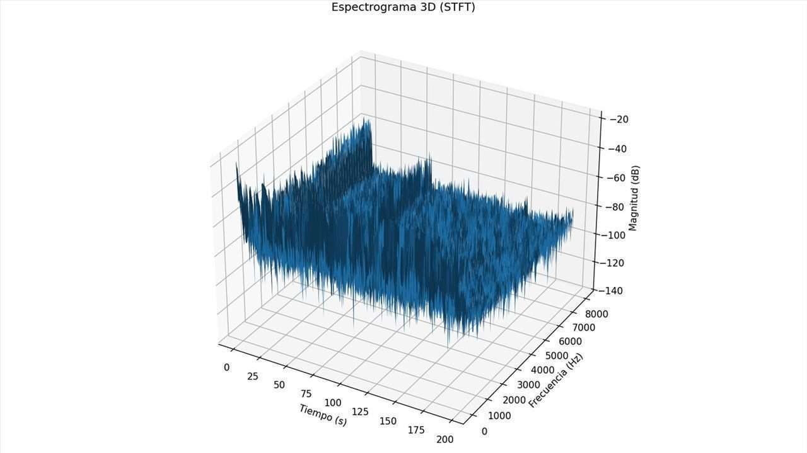
Ebanistería fina · madera maciza · producción propia
Piezas únicas y series cortas
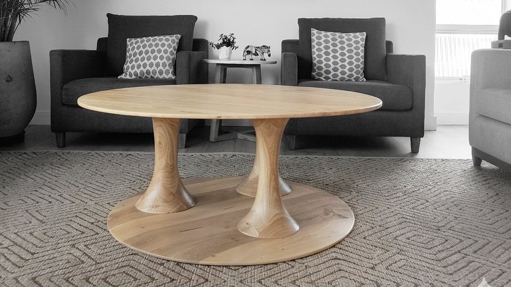
arcaica lab es mi taller de carpintería. Durante más de quince años he fabricado muebles y objetos a medida. Después de mi formación técnica en el oficio, inicié una práctica basada en el diálogo con quienes han encargado cada pieza. El propósito ha sido no estandarizar las ideas, sino permanecer abierto a resolver los espacios que otras personas imaginan y continuar aprendiendo el oficio a través del trabajo con la madera.
Mi fascinación por los árboles comenzó cuando era muy joven. Encuentro en sus estructuras una semejanza con nuestras neuronas y, por ello, los considero una de las formas de inteligencia más extraordinarias que he podido observar. La madera es expresiva hasta la médula, literalmente.
La carpintería es una investigación sobre el pensamiento estructurado, el ahorro de energía y movimiento, la precisión y el placer de percibir el paso del tiempo. También consiste, claramente, en hacer cosas hermosas. Ha sido —y continúa siendo— mi relación más tangible con el mundo de los objetos.
Como el resto de mi práctica, arcaica lab no pretende consolidarse como una marca fancy. Por el contrario, propone una práctica libertaria: una forma de conservar saberes ancestrales y ejercer un desaceleracionismo práctico. De este trabajo han derivado investigaciones digitales, pedagógicas, culturales y éticas.
| Inicio | 2007 · Bogotá |
|---|---|
| Documentación | catálogo, planos y propuesta curatorial propia desde 2020 |
| Líneas | mobiliario, escultura, mobiliario CNC (KYE) |
| instagram.com/arcaica_lab | |
| Estado | taller activo |
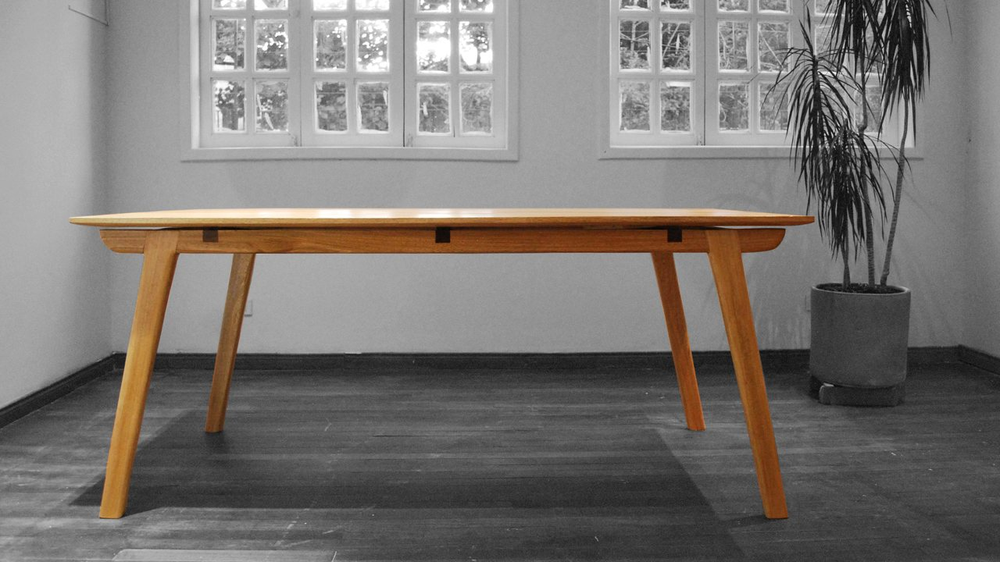
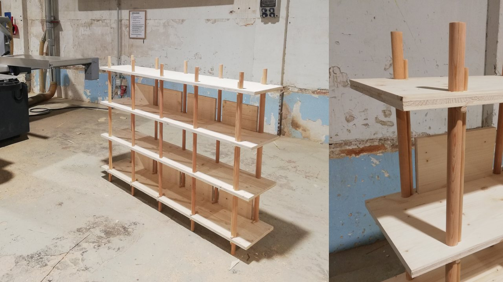
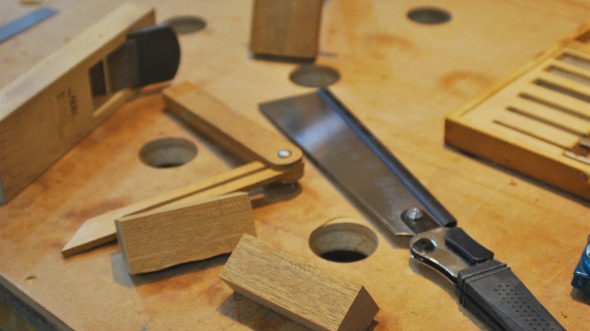
Escultura pública · arcos de madera sobre estructura de vigas
Proyecto ganador, Escultura Pública de Tenjo · Instituto Cultural de Tenjo, Cundinamarca
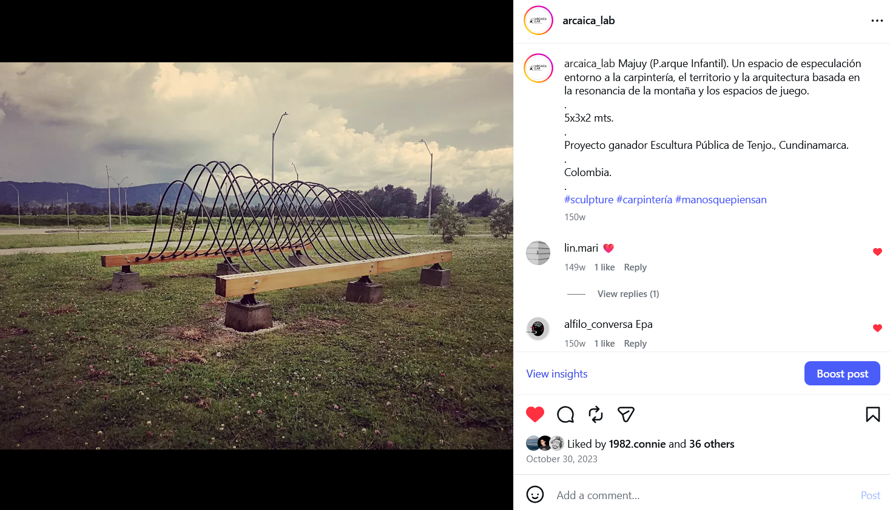
Majuy (P.arque Infantil) es un espacio de especulación entorno a la carpintería, el territorio y la arquitectura, basado en la resonancia de la montaña y los espacios de juego — nombre que remite al cerro sagrado muisca cercano a Tenjo.
Proyecto ganador de la convocatoria de Escultura Pública de Tenjo, Cundinamarca, instalado de forma permanente en el Instituto Cultural de Tenjo. Desarrollado en conjunto con Juliana Schönwald, Fabián Aristizábal y Ernesto Ramírez Casas, en casatrece.
Nos basamos en la topografía del cerro, representada mediante las curvas de nivel obtenidas en QGIS. A partir de ellas realizamos un estudio y seleccionamos aquellas que consideramos más viables para reproducir mediante el doblado de metal.
Al trasladar estas formas al taller, nos encontramos con una dificultad: reproducir nuestras curvas orgánicas dentro de las posibilidades que ofrecían las máquinas. Además, el tiempo y el presupuesto del proyecto no nos permitían experimentar demasiado, sino que nos exigían pasar directamente a la ejecución. Por ello, simplificamos los procesos y nos adaptamos a los recursos disponibles. Antes que perseguir la perfección, buscamos convertir el proceso en una oportunidad de aprendizaje para nuestro estudio.
Finalmente, quisimos plasmar en esta obra una pieza escultórica de carácter ambiental: una resonancia silente en el espectador.
| Ubicación | Instituto Cultural de Tenjo, Cundinamarca |
|---|---|
| Materiales | madera · estructura metálica de soporte |
| Colaboración | Juliana Schönwald · Fabián Aristizábal · Ernesto Ramírez Casas — casatrece |
| Dimensiones | 5 × 3 × 2 m |
| Estado | proyecto ganador, Escultura Pública de Tenjo · obra instalada, permanente |
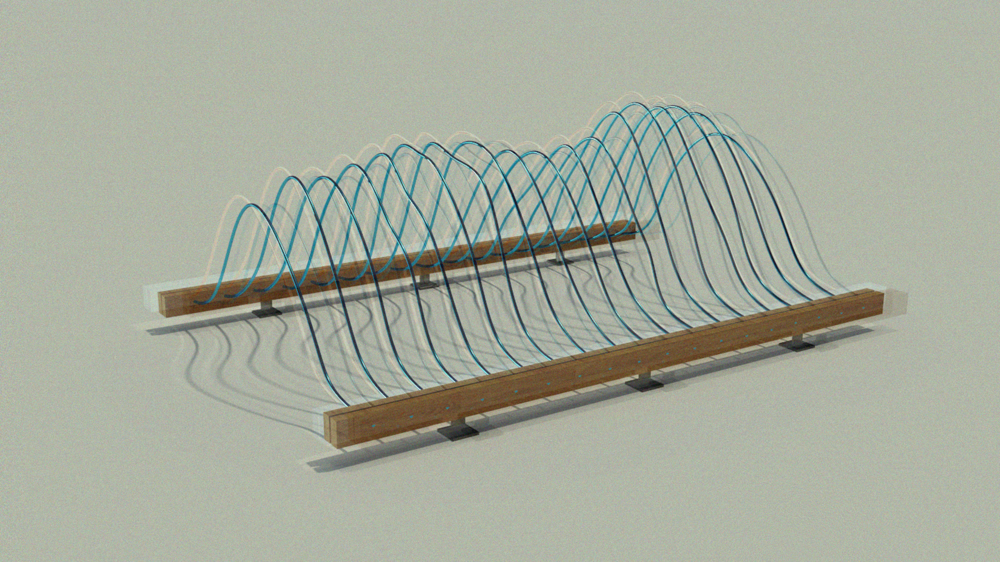
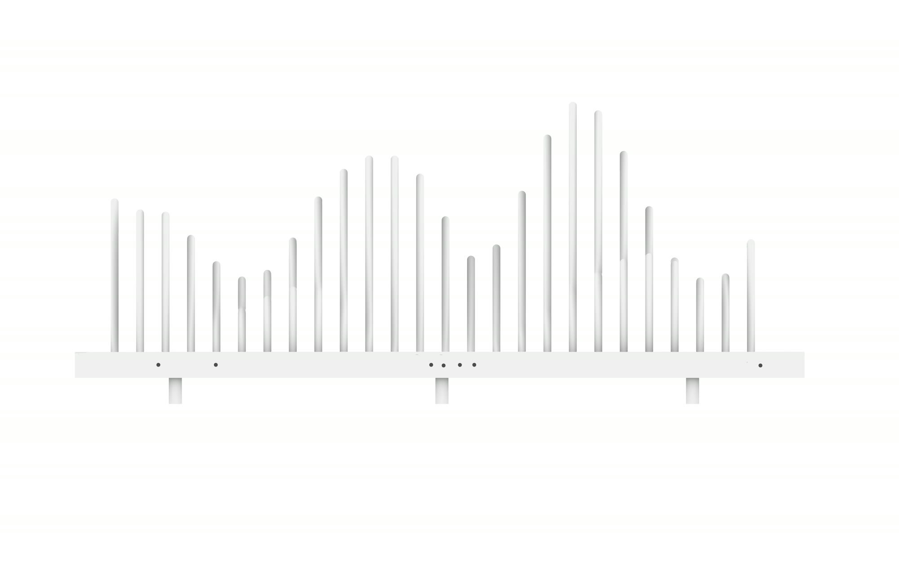
Objeto sonoro · madera de pino, audífonos, reproducción continua
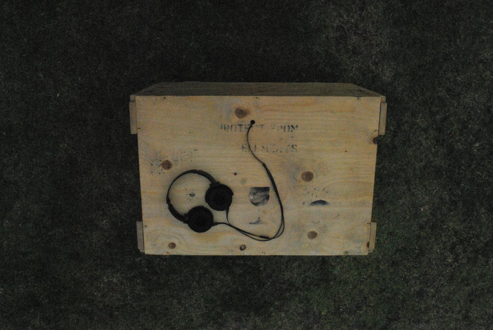
Analogías sonoras fue mi primer proyecto de arte sonoro. Después de trabajar con varios artistas de Bogotá en proyectos que implicaban enviar obras de un lugar a otro del mundo, comencé a cuestionar el sistema capitalista enmascarado detrás del arte contemporáneo y de sus procesos discursivos.
Siempre he estado en conflicto con la producción absurda de objetos, aunque amo la concepción artística. Por ello abracé el sonido como un elemento del que nadie puede apropiarse por completo. No puede colgarse en un muro: viaja por el espacio, nos afecta como cualquier otra manifestación de la materia y, al igual que el aire, no puede verse.
Estas reflexiones surgieron durante una serie de caminatas por Kennedy, en Bogotá, y me llevaron a crear una composición sonora contenida en un guacal: Analogías sonoras. El guacal se convirtió en un objeto contestatario dentro de la exposición. El contenedor era la obra de arte: ese objeto construido con extremo cuidado para proteger una pieza durante su transporte y que, una vez cumplida su función, suele almacenarse y ocultarse. También hacía visible al operario, al trabajador que sostiene toda la cadena de circulación del arte y que, sin embargo, permanece invisible.
La obra sonora, en cambio, una vez abierto el guacal, no podía contenerse: escapaba como un genio liberado de su botella. Solo podía escucharse mediante un gesto íntimo de proximidad.
La composición fue creada para existir únicamente durante aquella exposición, no para ser almacenada. De ella solo permanece el recuerdo contenido en estas imágenes.
| Formato de exhibición | exterior o sala · requiere alimentación |
|---|---|
| Materiales | pino, herrajes, audífonos, reproductor |
| Dimensiones | aprox. 45 × 32 × 30 cm |
| Exhibición | ArtBo Tutor, 2018 — primer proyecto sonoro exhibido |
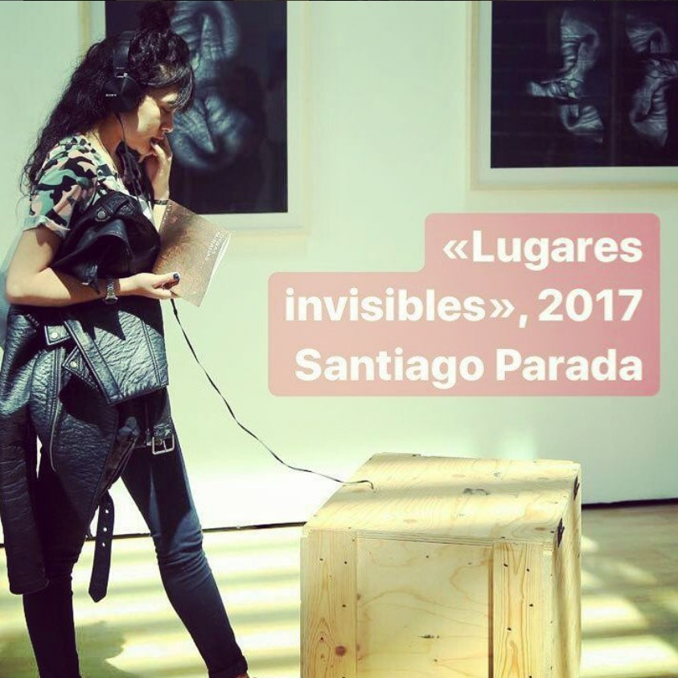
Mobiliario escultórico modular para espacios culturales · madera laminada
Propuesta esquemática · Convocatoria 2026 Microarquitecturas
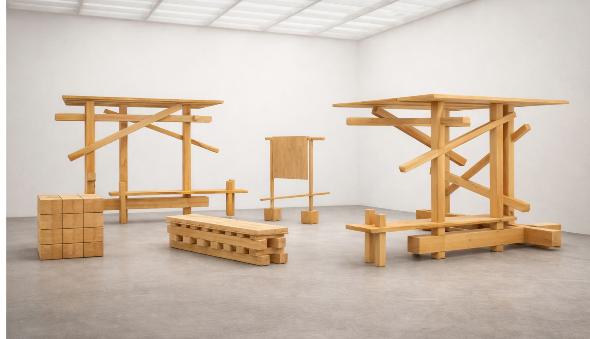
Arquitecturas es un espacio de experimentación que deriva de mi práctica de la carpintería y se despliega en el entorno digital de Rhino 3D. Allí especulo sobre espacios pedagógicos construidos en madera, inspirados en ciertos principios Montessori y en mi propia relación sensible con el material: me fascina tocarlo y olerlo, y lo considero noble, hermoso y duradero.
Juego libremente con las formas, como espero que puedan desarrollarse la educación y la pedagogía. Propongo espacios que mutan, cambian de lugar y favorecen la adaptación, el encuentro y el juego. Sus estructuras son modulares y emplean ensambles tradicionales de carpintería.
Cada propuesta es una especulación en torno al nomadismo pedagógico, la belleza y la claridad necesarias para estudiar, así como a las posibilidades visuales de la geometría. Los sistemas son reconfigurables: pueden trasladarse entre distintas geografías, montarse de manera parcial o completa y adaptarse a diferentes usos —encuentro, taller o exposición— sin alterar sus formas, únicamente su configuración y densidad.
| Componentes | estructura modular autoportante (3×3×2,5 m, 2 unidades) · banco urbano (220×60×50 cm) · 27 cubos de juego (35×35×35 cm) · mueble exhibidor (170×110×35 cm) |
|---|---|
| Materiales | madera laminada y techo alveolar · ensamble a media madera |
| Documento | ↓ Descargar propuesta esquemática (PDF) |
| Estado | propuesta esquemática |
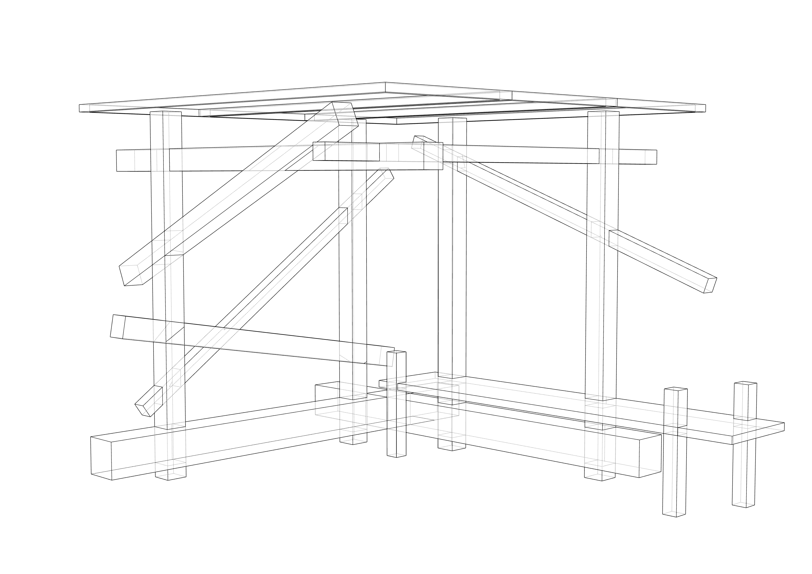
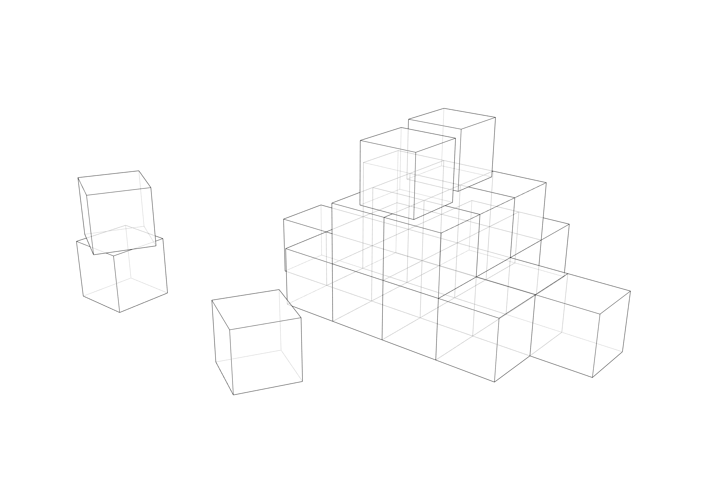
Aplicación generativa · juego de generación de ideas aleatorias
PWA · web y móvil · código abierto
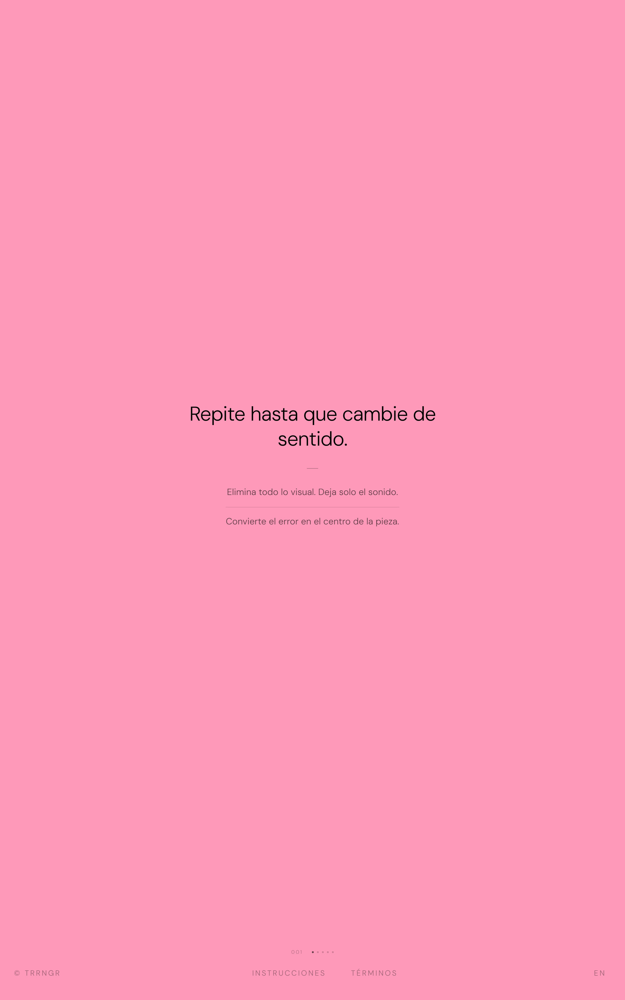
Inspirado por el genial Oblique Strategies de Brian Eno y Peter Schmidt — siempre quise hacer un juego de cartas así. luum cruza detonadores conceptuales con proposiciones concretas de acción, siguiendo una lógica tomada del I Ching: tablas fijas, encuentros variables. Más de 170.000 combinaciones posibles.
La imagen deja de ser un archivo y se convierte en una invitación: cada toque traslada la lógica de las piezas fijas a un sistema que el espectador manipula en su propio dispositivo. Un nuevo impulso para artistas, docentes, equipos, improvisadores y procesos creativos que necesitan otro ángulo.
| Contenido | 90 frases detonadoras · 64 proposiciones de acción · 15 estados de color · +170.000 combinaciones |
|---|---|
| Formato | navegador · instalable como PWA |
| Licencia | código abierto |
| Enlace | santiagoparada.github.io/luum |
| Estado | publicada · en línea |
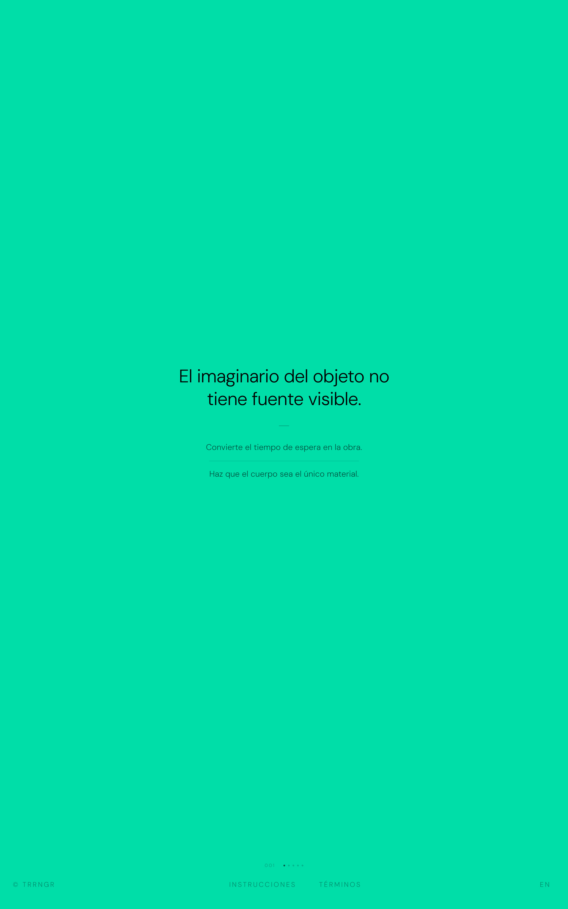
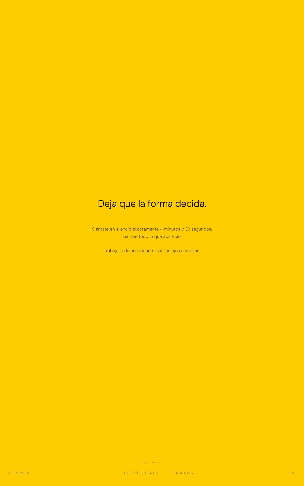
Práctica creativa e investigación musical · sintetizador, sampler y trompeta
Cinco álbumes publicados · Bandcamp y SoundCloud
trrngr es mi trabajo como artista sonoro. Tuve la oportunidad de estudiar alemán y trompeta, pero no podía aprender dos lenguajes al mismo tiempo, así que elegí el universal: la música.
Incorporé sintetizadores y samplers a mi práctica y me trasladé a Colombia para vivir y aprender de la música. Nunca lo hice dentro de un espacio académico o formal, sino desde la intuición y el diálogo con los lugares que he habitado. Mi trabajo imagina paisajes andinos, futuristas y subterráneos; busca comunicarse con otras especies y crear una música pop al margen del mainstream aturdidor del norte global. En ocasiones, intento escapar del estereotipo del colombiano bailador y salsero para proponer la figura de un colombiano andino que se pregunta por su territorio desde perspectivas sónicas.
trrngr es el nombre bajo el cual investigo la música desde 2020. Es una práctica de estudio construida con un sintetizador, un computador y un sampler, alimentada también por una trompeta que me acompaña desde antes de esta etapa digital. No es un proyecto paralelo a mi obra visual, sino uno de sus orígenes: el archivo sonoro que posteriormente alimenta clouds y otras piezas generativas nace aquí.
Cinco álbumes publicados entre 2020 y 2026 —micelios, laberintos, quye, andrómeda y tierranegra— conforman el trabajo realizado hasta el momento. Son ficciones andinas construidas a partir de una matriz sonora de polinización cruzada, poblada por historias persistentes, volátiles y fantásticas. Son composiciones que pueden escucharse sin seguir un orden determinado ni una secuencia lineal.
| Instrumentos | sintetizador, sampler, trompeta, pedales, computador |
|---|---|
| Discografía | micelios (2020) · laberintos (2023) · quye (2024) · andrómeda (2025) · tierranegra (2026) |
| Publicación | trrngr.bandcamp.com · soundcloud.com/trrngr |
| Estado | catálogo activo · nuevas sesiones en curso |
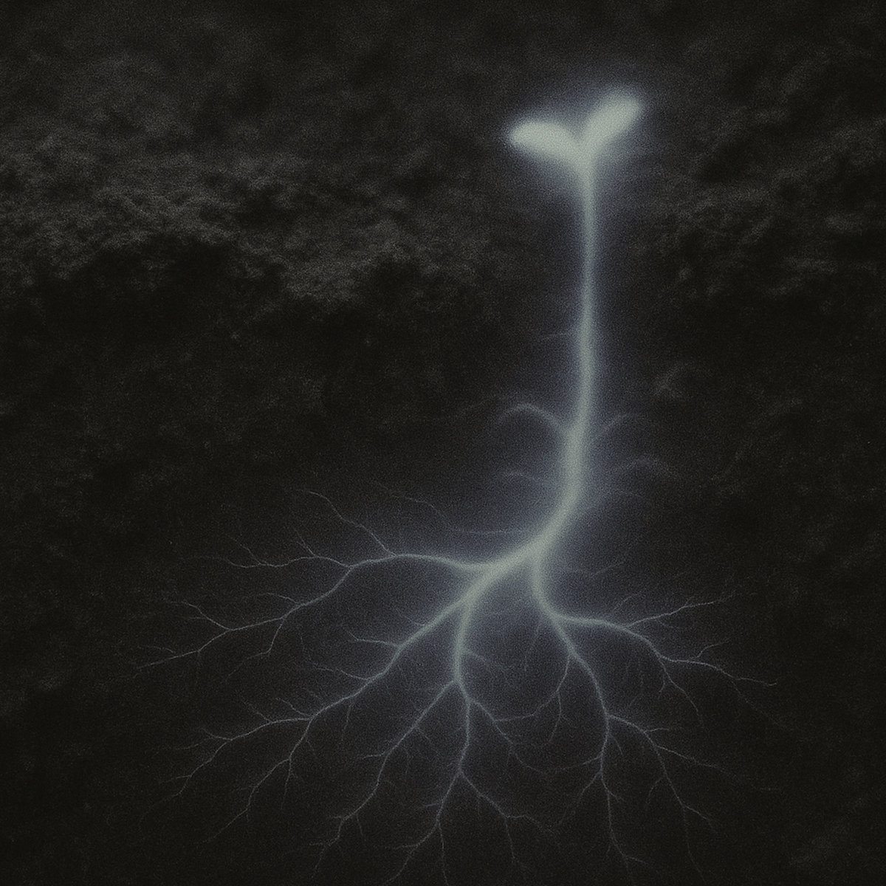
Espectáculo propio de malabares y clown · pensado especialmente para peques
Pelotas de malabar · presentaciones en vivo
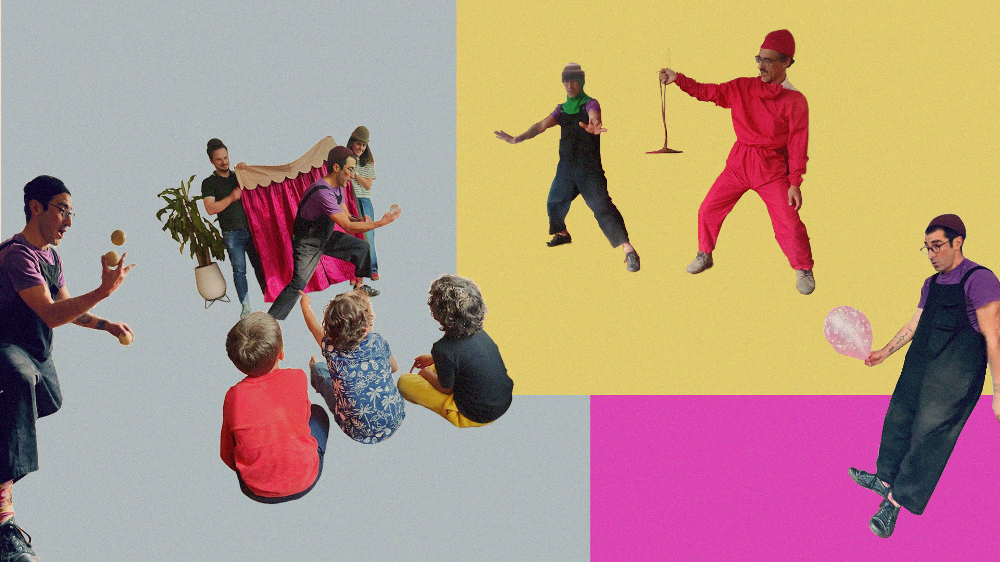
Mindfoolness es una práctica de libertad. Es una burla al sistema. Es jugar con los niños y apropiarse de espacios no convencionales —como el salón de una casa— para que allí se instalen el absurdo y el divertimento.
Desarrollo esta práctica desde hace muchos años, cuando terminé mis estudios de teatro gestual en la escuela de Jacques Lecoq. Desde entonces, Mindfoolness ha aparecido en innumerables cumpleaños, fiestas de quince años, ferias y eventos de todo tipo: desde escenarios públicos, como el Parque Simón Bolívar, rodeado de miles de personas, hasta el comedor íntimo de una familia. El tamaño del público no importa. Lo importante es la reacción que provoca el encuentro y la libertad que comparten el payaso y quienes lo rodean.
Esta práctica también me ha permitido desarrollar una forma de exploración antropológica, especialmente en Catalunya, donde tuvo lugar la mayor parte de este recorrido. Mindfoolness es mi número; me acompaña como los números que se transmiten y transforman en la mejor tradición de las familias circenses.
Practico disciplinadamente el malabarismo y la pantomima como parte de mis meditaciones diarias, para estar preparado cuando el escenario lo requiera. Como muchos de mis trabajos, Mindfoolness no busca materializarse en un objeto acabado, sino sostener un proceso constante de práctica, transformación y aprendizaje.
| Formato de exhibición | presentación en vivo · espacio público, escenario o en casa |
|---|---|
| Materiales | pelotas de malabar |
| Antecedentes | beca IDARTES para la creación de obras artísticas de clown |
| Estado | práctica activa |
Talleres de pedagogía expandida · cuerpo, materiales y escucha
Movimiento corporal · carpintería · atención al sonido · pensamiento abstracto
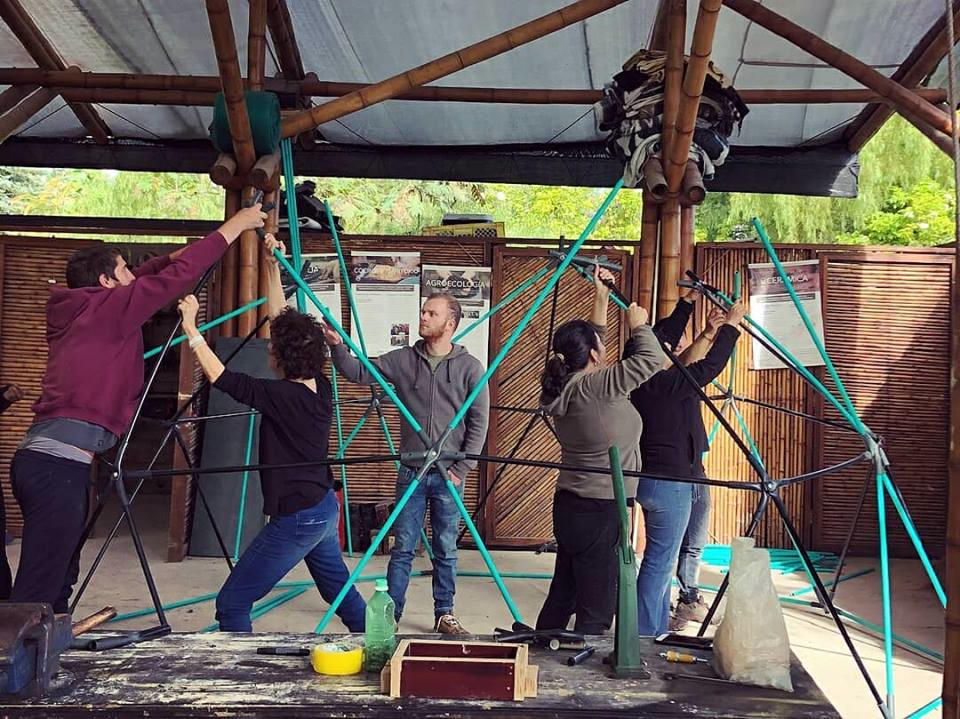
La pedagogía expandida ha sido una herramienta para compartir mis conocimientos y, al mismo tiempo, enriquecerlos con las experiencias de quienes participan. Es un ejercicio de diálogo a través del juego y una forma de aprender desde el cuerpo, los materiales, la escucha y la abstracción, fuera de los espacios académicos y formales. Es una práctica libre, nómada y subversiva.
En estos espacios he impartido clases de movimiento corporal, carpintería, escucha atenta y pensamiento creativo abstracto mediante ejercicios que conectan la percepción, el hacer y la reflexión colectiva.
Como un hacker, he insertado mis metodologías en instituciones y espacios como la Universidad de los Andes, la Escuela de Artes y Oficios Santo Domingo, el Liceo Juan Ramón Jiménez, colegios concertados de Bogotá, la Cárcel de Santa Marta, la Galería NC-Arte, Organizmo y Terreno Paisajismo. Allí he buscado sembrar semillas de inquietud y curiosidad, y propiciar una aproximación al conocimiento basada en la apertura del pensamiento, más que en la formalidad.
También he convertido mi propio taller en un aula experimental, donde he desarrollado encuentros de carpintería, expresión corporal y diseño de sintetizadores bajo la filosofía del "Hágalo Usted Mismo".
La pedagogía es una herramienta de subversión.
| Enfoque | pedagogía expandida como práctica corporal · aprendizaje colectivo desde la percepción y el hacer |
|---|---|
| Espacios | Universidad de los Andes · Escuela de Artes y Oficios Santo Domingo · Liceo Juan Ramón Jiménez · Colegios Concertados de Bogotá · Cárcel de Santa Marta · Galería NC-Arte · Organizmo · Terreno Paisajismo |
| Antecedentes | Tabio, territorio sónico (2019, con Felipe Cotero) · Festival Internacional de Payasos de Las Tunas, Cuba |
| Estado | práctica pedagógica activa · documentada desde Tabio, 2019 |
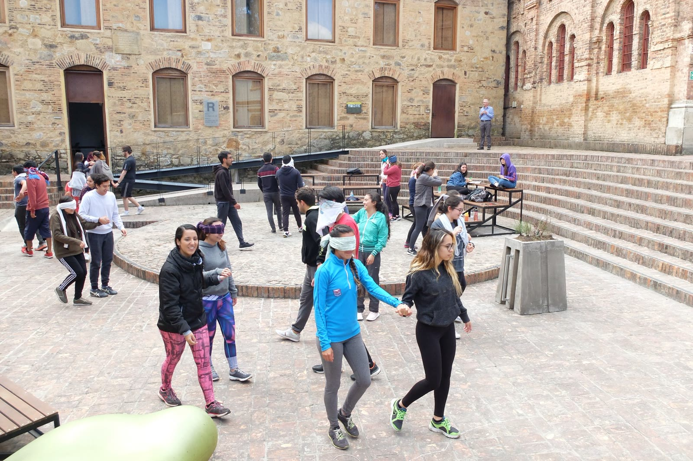
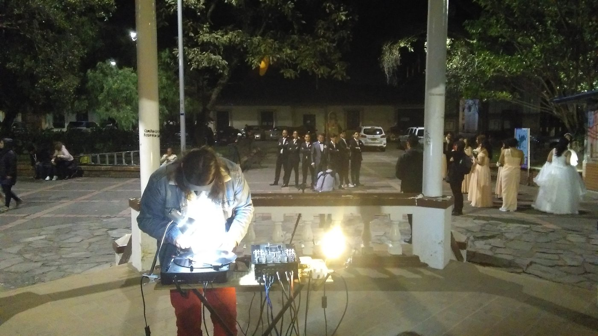
| 2005 | Santiago inicia su práctica de clown. Estudis de Teatre Jacques Lecoq, Barcelona (2005–2007). |
|---|---|
| 2007 | Compañía Cromosomos — teatro físico cómico, creación de números para cabarets y teatros en España (2007–2013). |
| 2007 | Comienza la práctica que da origen a arcaica_lab. |
| 2009 | Título de Técnico en Fabricación a Medida e Instalación de Carpintería y Mueble, Escola Industrial del Treball, Barcelona. |
| 2011 | Colectivo de Payasos la Bola Roja — teatro absurdo y cómico, programación semanal en el Teatre Llantiol, Barcelona (2011–2012). |
| 2013 | Inicio de prácticas expandidas pedagógicas en diversos espacios de Bogotá, Colombia, y en el Festival Internacional de Payasos de Las Tunas, Cuba. Esa práctica continúa actualmente con talleres de formación en el oficio de la carpintería. |
| 2014 | Compañía La Torpe — proyectos escénicos y pedagógicos para teatros, calles y espacios no convencionales; invitado al Encuentro Internacional de Clown de Las Tunas, Cuba (2014–2016). |
| 2015 | Diplomado en Gestión Cultural Local, Organización de Estados Iberoamericanos / Universitat de Girona. |
| 2016 | Miss Elliot — creación, dirección e interpretación del espectáculo de clown, malabares y música experimental "Loop"; mención especial de la Secretaría de Recreación y Deportes e IDARTES (2016–2020). |
| 2017 | Analogías sonoras — objeto sonoro en madera. Primera pieza donde un contenedor material alberga sonido. |
| 2017 | Ganador de la beca ArtBo Tutor, Cámara de Comercio de Bogotá. |
| 2018 | Analogías sonoras se exhibe en ArtBo Tutor — primer proyecto sonoro exhibido. Inicio del archivo de grabaciones de campo en la sabana de Bogotá. |
| 2018 | Residencia Artística Nacional, Ministerio de Cultura de Colombia, para investigar la arquitectura de la Casa Platohedro, Medellín. Perspectivas Sonoras Andinas — piezas sonoras experimentales a partir de esa investigación. |
| 2018 | Organizmo y Jardinología, Tenjo — pedagogía para la construcción de un domo geodésico en madera de 7 m de diámetro. |
| 2019 | Ruido Maraca — composición derivada de la Residencia Artística Nacional en Platohedro, publicada en Systemma, serie de International Digital Music Label and Live Cast con base en Odesa, Ucrania, activa a nivel mundial. soundcloud.com/systemma1/sistema-149-ruido-maraca |
| 2019 | Tabio, territorio sónico — escucha colectiva y partituras gráficas. |
| 2020 | Primeras composiciones bajo el nombre trrngr · música pop. trrngr.bandcamp.com |
| 2020 | Casatrece Artes y Oficios, Tenjo — gestor cultural y creador de contenidos pedagógicos para este espacio rural artesanal independiente (2020–2023). |
| 2021 | Ganador de Capital Semilla para Artesanías, Casatrece Tenjo / IMCTT. |
| 2022 | Parpadea — pieza sonora presentada en Pumpumyachkan, Festival Asimtria, Cusco. En colectivo con Juliana Schönwald. |
| 2023 | Majuy — escultura pública en madera, instalada en el Instituto Cultural de Tenjo. En conjunto con Juliana Schönwald, Fabián Aristizábal y Ernesto Ramírez Casas, en casatrece. Ganador de la convocatoria de Escultura Pública de Tenjo. |
| 2024 | Docente en técnicas de carpintería tradicional, Escuela de Artes y Oficios Santo Domingo. |
| 2026 | clouds — Frameworks of Behaviour, práctica en curso. |
| 2026 | Publicación de luum. |
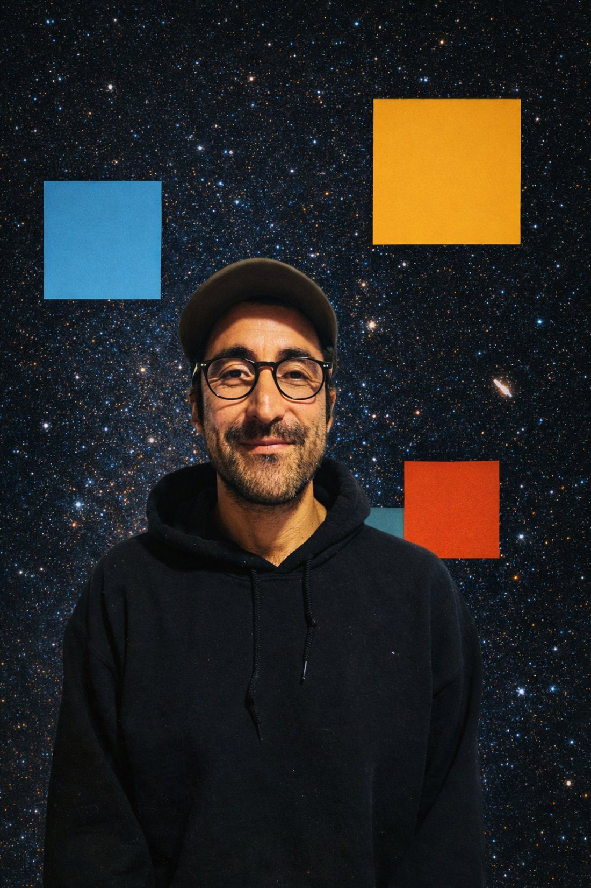
Santiago Parada (trrngr) vive y trabaja en Bogotá.